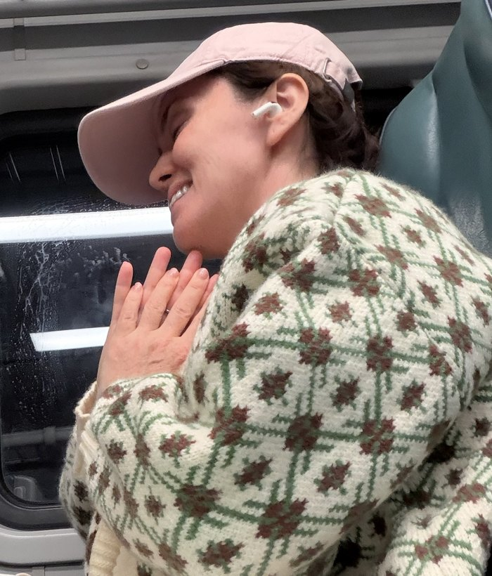
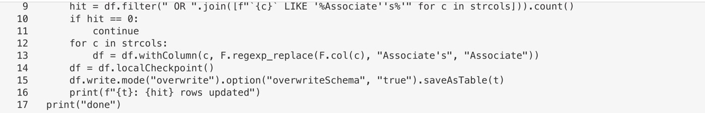

article · notes on work · November 2026

the moment I read it
A few weeks ago I shared that I was building a New York study of what a college major is worth during my internship at SUNY Empire. It has now come together as a Power BI report, built on my first semantic model.
Along the way, a request came in to follow the style guide: “Associate,” not “Associate’s.” It sounds like one word. In practice it meant every table, every report page, every filter and slicer, checked and fixed without breaking anything that already worked.
My answer was simple: I will work on this. No problem. It took a working weekend ☕ and a lot of care.

Saying yes without making it a big deal. Being thoughtful about work others may never see. Doing it right, even when no one is watching.
And then a note from my internship supervisor found me:
“The analysis is thoughtful, well-executed, and presented in a way that makes the findings accessible and compelling”my internship supervisor
“Thank you for all the effort, initiative, and professionalism you have brought to this project”my internship supervisor
It made my whole day, and you can see exactly how in the photo 💛
Professionalism doesn’t have to be loud. Quiet work still gets seen.
Thank you to the Institutional Effectiveness team at SUNY Empire for the trust, the guidance and the room to grow 🙏
← articles